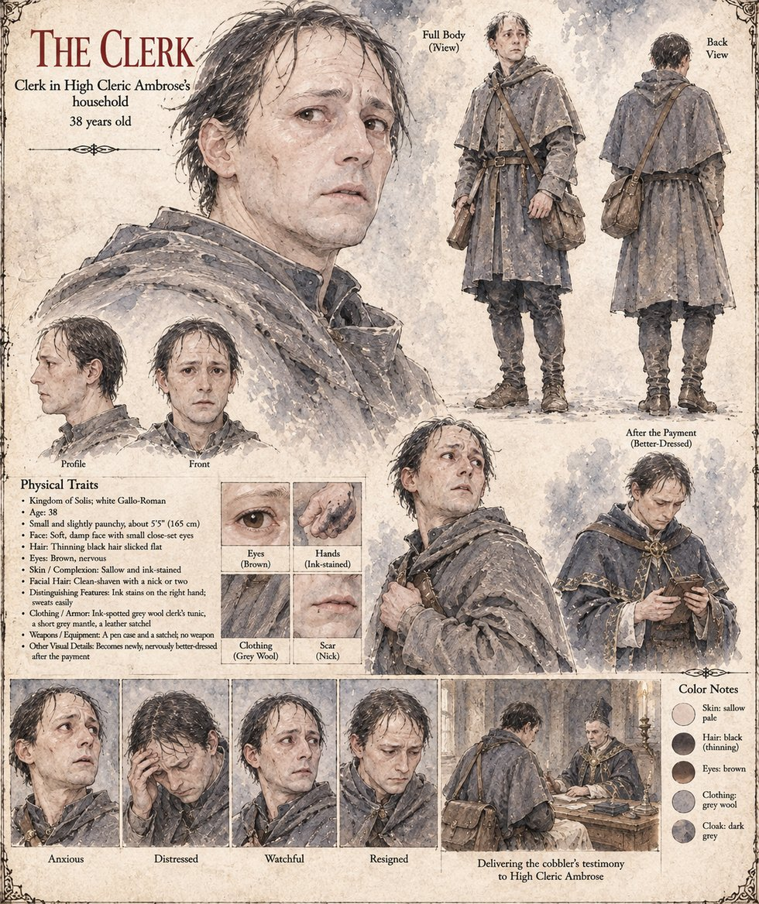

The Clerk
Clerk in High Cleric Ambrose’s household · 38 by his sheet
A clerk in the household of High Cleric Ambrose. In Chapter Five Corvin pays him to make sure the Dismissed Cobbler’s testimony reaches Ambrose’s desk first, and he becomes newly, nervously better dressed afterward. When the papers surface in Chapter Thirteen he flees the capital and is never formally charged.
The bible says the source gives no physical description and the details were invented for consistency. The sheet makes him thirty-eight, small and slightly paunchy at about 5'5", with a soft, damp face and small close-set eyes, thinning black hair slicked flat, nervous brown eyes, sallow skin, ink stains on the right hand, and a tendency to sweat. He wears an ink-spotted grey wool tunic and short grey mantle and carries a pen case and a leather satchel; a second figure shows the better-dressed version after the payment. The scene panel puts him at Ambrose’s desk, and there is a flag: the sheet draws Ambrose in a mitre and dark embroidered vestments, while the bible dresses him in a pale-grey undyed cassock and mantle.